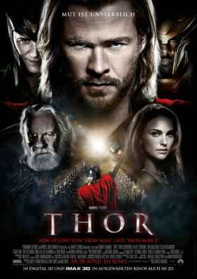
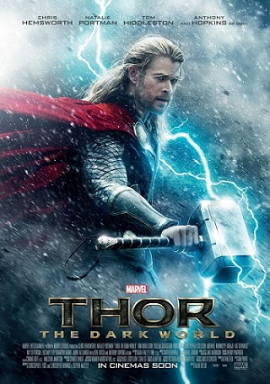
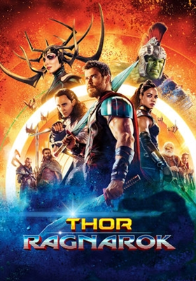
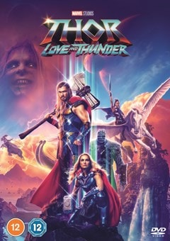

Thor is a 2011 American superhero film based on the Marvel Comics character of the same name. Produced by Marvel Studios and distributed by Paramount Pictures, it is the fourth film in the Marvel Cinematic Universe (MCU). Thor premiered in Sydney on April 17, 2011, and was released in the United States on May 6, as part of Phase One of the MCU. It received generally positive reviews from critics and was a financial success, earning $449.3 million worldwide.
Thor: The Dark World is a 2013 American superhero film based on the Marvel Comics character Thor, produced by Marvel Studios and distributed by Walt Disney Studios Motion Pictures. It is the sequel to Thor (2011) and the eighth film in the Marvel Cinematic Universe (MCU). Thor: The Dark World premiered at the Odeon Leicester Square in London on October 22, 2013, and was released in the United States on November 8, as part of Phase Two of the MCU. The film was a commercial success, grossing over $644 million worldwide and becoming the tenth highest-grossing film of 2013.
Thor: Ragnarokis a 2017 American superhero film based on the Marvel Comics character Thor, produced by Marvel Studios and distributed by Walt Disney Studios Motion Pictures. It is the sequel to Thor (2011) and Thor: The Dark World (2013), and is the 17th film in the Marvel Cinematic Universe (MCU). Thor: Ragnarok premiered in Los Angeles on October 10, 2017, and was released in the United States on November 3, 2017, as part of Phase Three of the MCU. It grossed $854 million, becoming the highest-grossing film of the series and the ninth-highest-grossing film of 2017.
Thor: Love and Thunderis a 2022 American superhero film based on Marvel Comics featuring the character Thor, produced by Marvel Studios and distributed by Walt Disney Studios Motion Pictures. It is the sequel to Thor: Ragnarok (2017) and the 29th film in the Marvel Cinematic Universe (MCU). Thor: Love and Thunder premiered at the El Capitan Theatre in Hollywood on June 23, 2022, and was released in the United States on July 8, as part of Phase Four of the MCU. Love and Thunder grossed over $760 million worldwide, making it the sixth-highest-grossing film of 2022.
